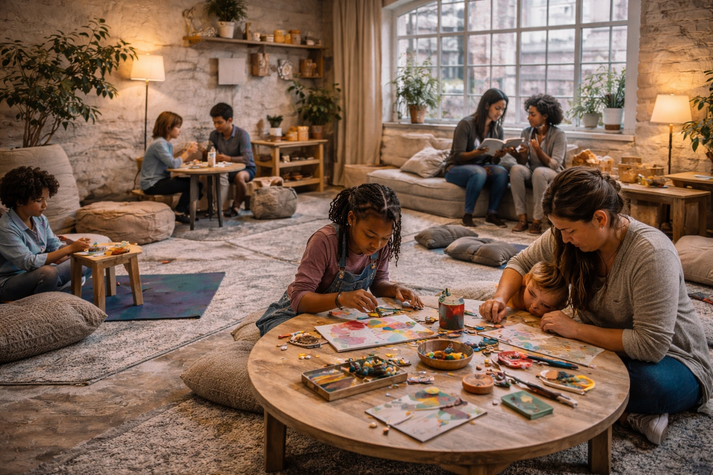

Where wellness finds you.
Finding Eden is a community healing space for people navigating trauma, burnout, and the complicated work of becoming themselves — through movement, creativity, storytelling, and real human connection.
A space built for the parts of healing that happen between therapy sessions.
Almost every person carries something privately. Anxiety. Loss. Grief. Burnout. Confusion. Most people don't have a safe place to take those things — somewhere that isn't clinical, isn't expensive, and doesn't require you to have it together.
Finding Eden exists to create that place. Movement heals. Creativity heals. Being witnessed without judgment heals. Community heals.
The founder story →Anyone who is carrying something and looking for a softer way through.
People healing from trauma
Who need space to process without pressure or performance.
Those in burnout or transition
Who feel stuck, disconnected, or unsure where life is headed.
Creative and expressive people
Who process through movement, art, music, writing, or story.
Anyone craving real community
Who are tired of surface-level connection and want something honest.
Programs designed to meet you where you are.
- •Somatic movement and body-based grounding
- •Creative art workshops and expressive healing
- •Nervous system regulation and sensory support
- •Community circles and honest storytelling
- •Youth programs and family creative spaces
Four ways into the Finding Eden space.
Start Here
Not sure where to begin? Start here for a gentle, guided entry point.
In-the-Moment Tools
Breathing, grounding, and sensory exercises for when you need them now.
Voices of Strength
Real stories from people navigating healing, honesty, and hard chapters.
Resource Library
In-depth articles on trauma, boundaries, creative healing, and more.

Finding Eden: A community healing experience.
Our first gathering introduces the vision through movement, art, storytelling, and community connection. A felt sense of what Finding Eden is building.